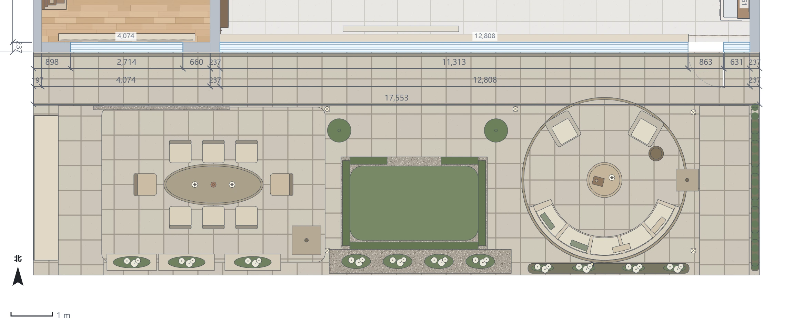
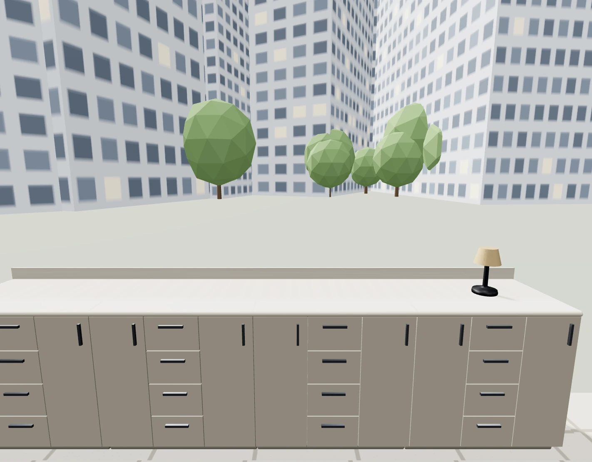
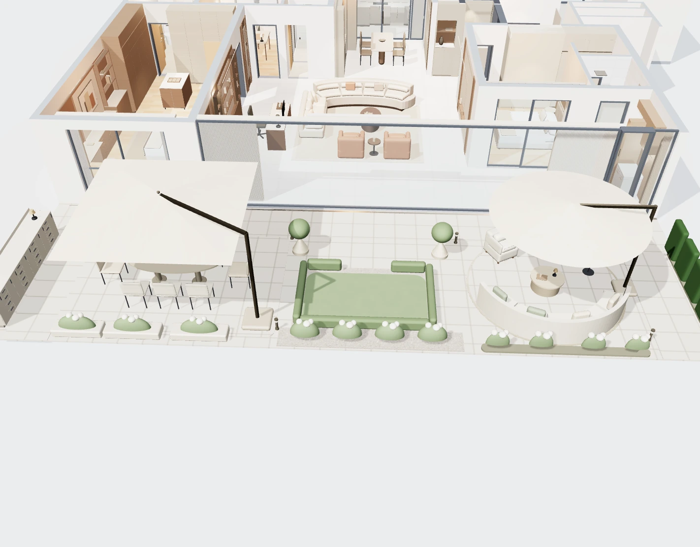

法式花园 · 西侧连续操作台
AI氛围效果：操作台沿左侧西边界布置，靠近聚餐区。材质为浅暖石台面＋灰米色柜门；实际尺寸以模型为准。

新版花园平面 · 北向在上，暂隐高处伞面
左侧窄长条是新增操作台，3500×600mm。台前1100mm通路向内平移；窗前1300mm及东侧1200mm通路保留。

操作台正面 · 实际可编辑模型
台面高900mm，四段875mm柜体相连；园艺物品独立存放。先按干式备餐、摆盘与餐具收纳使用，没有新增水槽或灶具。模型远景为通用示意。

全屋与花园 · 实际模型
父母房64版一体梳妆洗漱柜及北侧衣柜保留，室内与门窗未改。两把悬臂伞、八张餐椅及右侧圆庭原位保留。

通道与使用核对
西侧通路现在位于操作台东侧，包含柜门拉手后仍保留1100mm净宽。餐椅后拉450mm与新增柜体没有碰撞；西南第一只花槽向东移动275mm并略缩短，避让通路。
原柜移至西边界后释放了餐桌边的工作空间。柜体关闭、餐椅后拉时，西端餐椅背至操作台前沿仍有约1.3米以上距离。柜门开启时需临时让行。
模型自查无新增告警、无脚本错误，保存重新打开数据一致。户外柜体耐候、防锈、台面排水及设备尺寸待深化。